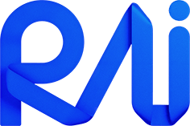

Working prototype
Between the keyboard and any model.
Detect. Restore. Ask.

Your turn. Try an example, or type your own.
ime.zhouyixiaoxiao.com/pitch
Runs in the browser. No model call. 20 keyboard layouts.
Thursday: a research poster. Today: a prototype, a target customer and a count.
800,000
messages a day reach AI assistants typed on the wrong keyboard.
Estimate: about 1 in 10,000 real messages × 8 billion messages a day across AI assistants (seoClarity, Similarweb, 2026). Range: 300,000 to 2 million.
107 real cases, sent to this year’s models
The cheaper one missed more than half.
GPT-6.2 Astra and GPT-6 Luna (lowest reasoning).
A small problem. A very large surface.
One small layer.
Every conversation.
- Cost
- No model call. One integration covers every customer of a platform.
- Six months
- One paid pilot. A public ranking of models.
- My ask
- Introduce me to one chatbot platform.
AI should understand people
as they type
Every keyboard. Every script. Every model.
Xiaoxiao Zhouyi · University of Bristol
ime.zhouyixiaoxiao.com/pitch
zhouyixiaoxiao.com
linkedin.com/in/zhouyixiaoxiao


Innovation & Enterprise Bootcamp at UKAIRS 2026 · delivered by the UCL Centre for Digital Innovation · funded by Responsible AI UK · hosted by the University of Edinburgh